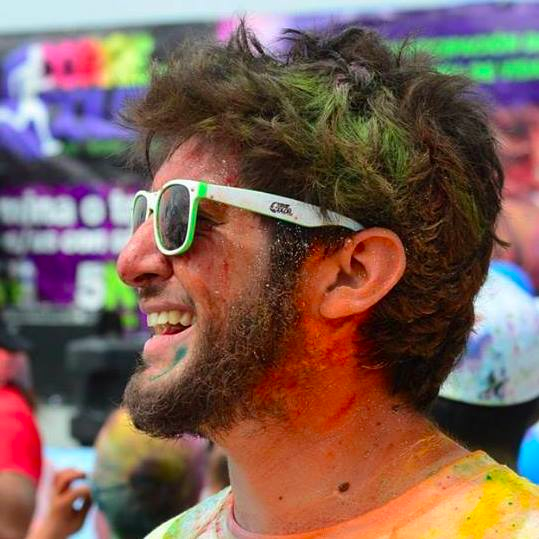

<ion-side-menus enable-menu-with-back-views="false">
  <ion-side-menu-content>
    <ion-nav-bar class="bar-calm">
      <ion-nav-back-button>
      </ion-nav-back-button>

      <ion-nav-buttons side="left">
        <button class="button button-icon button-clear ion-navicon" menu-toggle="left">
        </button>
      </ion-nav-buttons>
    </ion-nav-bar>
    <ion-nav-view title="ToutCast" name="menuContent"></ion-nav-view>
  </ion-side-menu-content>

  <ion-side-menu side="left">
    <ion-content>
      <div class="tc-menu-bg">
        
        <div class="tc-profile-info light">
          Alejandro Castro
        </div>
      </div>
      <ion-list>
        <ion-item class="item-icon-left" menu-close ui-sref="app.home">
          <i class="icon ion-android-home"></i>
          Home
        </ion-item>
        <ion-item class="item-icon-left" menu-close ng-click="login()">
          Login
        </ion-item>
        <ion-item class="item-icon-left" menu-close href="#/app/playlists">
          <i class="icon ion-android-settings"></i>
          Options
        </ion-item>
        <ion-item class="item-icon-left" menu-close href="#/app/landing">
          <i class="icon ion-android-favorite"></i>
          Favorites
        </ion-item>
      </ion-list>
    </ion-content>
  </ion-side-menu>
</ion-side-menus>
